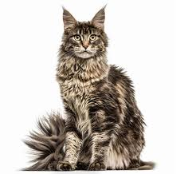

Her kan du få vite litt om noen katteraser.
Dette er en Maine Coon.
Maine Coon er den største katterasen. En voksen hann kan bli opp til 1 meter og veie 10 kg! En voken hunn kan bli opp til 5 kg. De kommer fra Maine, USA. De er ofte veldig kosete og lekene.
Fra den største til en av de minste; Munchkin Katt.
Munchkin katten har en genetisk mutasjon som gjør slik at den har korte bein. Som du kan se i bilde er de kortere en vanlige kattebien. Det er en ganske ny katt, den ble først dokumentert i 1940-tallet og offisielt anerkjent i 1991. Den er kjent som den første dverg katterasen.
Enda flere katteraser? Ok, klikk her!
Greide du å lese ferdig?
Tilbake.